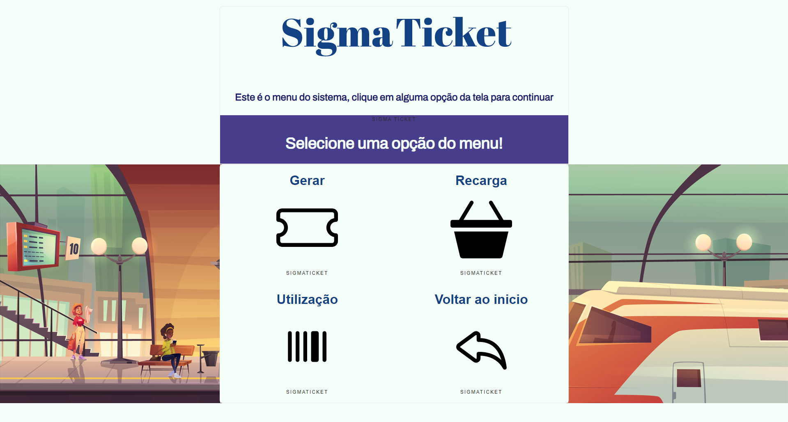

portifólio
Pedro Lyra
Software Engineer Student


Currently devoted to becoming a developer. Interested in new tecnologies, having knowledge in C, Python, Javascript
Currently studying Software Engineering at Pontíficia Universidade Católica de Campinas (PUCCAMP). Programing knowledge acquired through classes and studies.
Knowledge acquired largely by self-taught. Always looking and researching free teaching platforms, always seeking to increase my knowledge in several programming languages
A person who enjoys working with groups of people. A team-oriented employee is beneficial to the workplace because, they are focused on the overall success of their department or project in addition to their individual role and responsibilities.
A person who can quickly adapt to changes. In the workplace, a flexible employee can always learn new procedures, and most important, take this new changes in a optimistic way.
A communicative individual is skilled at connecting with others over a variety of mediums. In workplace, they can use verbal or written communication skills to relay information to others.
Project carried out during the second period of the Software Engineering course. Basically, it is a simulation, a system for generating, validating, using and managing a single urban ticket
 Read More